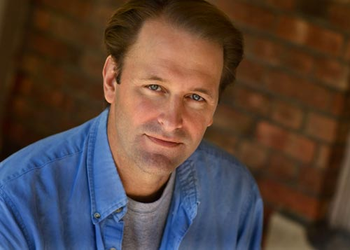

A culinary ratio is simply a proportion of one ingredient relative to another. A custard is 2 parts liquid, 1 part egg. Pasta dough is 3 parts flour, 2 parts egg. Bread is 5 parts flour, 3 parts water. When you know a culinary ratio, it’s not like knowing a single recipe, it’s like knowing a thousand.
This, the Ratio iPhone application, based on the book Ratio: The Simple Codes Behind the Craft of Everyday Cooking, puts 28 key ratios in your pocket, a tap away. The app does all the calculating and converting for you. Just enter the amount of one ingredient, and all the ingredients will appear in their exact proportions.
This application is your electronic guide to the fundamental preparations that form the backbone of the culinary arts: breads and pastas, cakes and cookies, sausages, brines, stock, sauces, soups, custards both savory and sweet, the sweet sauces, and a resource for keeping track of your experiences with them.
Ratios are proportions by weight, not by volume, so they work best in conjunction with a scale. (Here’s the scale I use.) We help you fudge it here if you don’t have one, but the only surefire way ratios work, and work every time, is if you weigh your ingredients.
There is no beginner who can’t take Superman-sized leaps and bounds when he or she embraces a ratio. There is no chef, not even the best chef on earth, who can’t get a little better by bringing a culinary fundamental closer to that unreachable state of perfection. A ratio is the starting point.
Michael Ruhlman is the author of more than a dozen books, most of them devoted to food, cooking and the work of the professional chef. He also writes the Notes From the Food World blog at ruhlman.com. More information about Michael and his work can be found there.